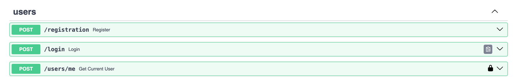
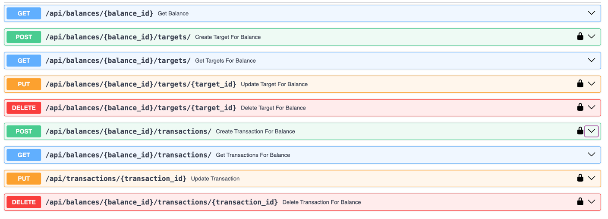
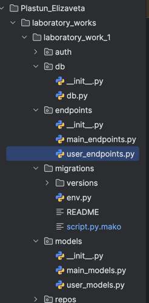

Отчет по лабораторной работе №1
Для работы будет использоваться следующий стек: fastapi sqlmodel uvicorn alembic
На первом шаге инициализируем приложение и подключаем базу данных:
import uvicorn
from fastapi import FastAPI
from sqlmodel import SQLModel
from db.db import engine
from endpoints.user_endpoints import user_router
from endpoints.main_endpoints import main_router
from models.user_models import *
app = FastAPI()
app.include_router(user_router)
app.include_router(main_router, prefix="/api")
def create_db():
SQLModel.metadata.create_all(engine)
if __name__ == '__main__':
uvico
from sqlmodel import create_engine, Session
import os
from dotenv import load_dotenv
load_dotenv()
postgres_url = os.getenv('DB_URL')
db_url = postgres_url
engine = create_engine(db_url, echo=True)
session = Session(bind=engine)
Создаем модели данных для бд, в них будет входить: пользователь, баланс, транзакции и цели, также будет создан enum для категорий
class TransactionsType(str, Enum):
INCOME = "income"
EXPENSES = "expenses"
class TargetDeafult(SQLModel):
category: Category = Category.OTHER
value: int = 0
balance_id: int = Field(foreign_key="balance.id")
class Target(TargetDeafult, table=True):
id: int = Field(primary_key=True)
balance: Optional["Balance"] = Relationship(back_populates="targets")
class Transactions(SQLModel, table=True):
id: int = Field(primary_key=True)
category: Category = Category.OTHER
value: int = 0
type: TransactionsType = TransactionsType.INCOME
balance_id: int = Field(foreign_key="balance.id")
balance: Optional["Balance"] = Relationship(back_populates="transactions")
class BalanceDeafult(SQLModel):
balance: int = 0
user_id: Optional[int] = Field(foreign_key="user.id")
class Balance(BalanceDeafult, table=True):
id: int = Field(primary_key=True)
user: Optional[User] = Relationship(back_populates="balance")
transactions: List[Transactions] = Relationship(back_populates="balance")
targets: List[Target] = Relationship(back_populates="balance")
class UserBalance(BalanceDeafult):
transactions: List[Transactions] = None
targets: List[Target] = None
test: int = 0
#delite
class TargetResponse(TargetDeafult):
balance: Optional[Balance] = None
class TargetCreate(SQLModel):
category: Category
value: int
class TargetUpdate(SQLModel):
category: Category
value: int
class TransactionsCreate(SQLModel):
category: Category
type: TransactionsType
value: int
class TransactionsUpdate(SQLModel):
category: Category
type: TransactionsType
value: int
Также создаем модель пользователя:
class User(SQLModel, table=True):
id: int = Field(primary_key=True)
username: str = Field(index=True)
password: str
email: str
balance: Optional["Balance"] = Relationship(back_populates="user")
created_at: datetime.datetime = Field(default=datetime.datetime.now())
Теперь добавляем эндпоинты для авторизации
@user_router.post('/registration', status_code=201, tags=['users'], description='Register new user')
def register(user: UserInput):
users = select_all_users()
if any(x.username == user.username for x in users):
raise HTTPException(status_code=400, detail='Username is taken')
hashed_pwd = auth_handler.get_password_hash(user.password)
balance = Balance(balance=0)
u = User(username=user.username, password=hashed_pwd, email=user.email, balance=balance)
session.add_all([u, balance])
session.commit()
return JSONResponse(status_code=201, content={"message": "User registered successfully"})
@user_router.post('/login', tags=['users'])
def login(user: UserLogin):
user_found = find_user(user.username)
if not user_found:
raise HTTPException(status_code=401, detail='Invalid username and/or password')
verified = auth_handler.verify_password(user.password, user_found.password)
if not verified:
raise HTTPException(status_code=401, detail='Invalid username and/or password')
token = auth_handler.encode_token(user_found.username)
return {'token': token}
@user_router.post('/users/me', tags=['users'])
def get_current_user(user: User = Depends(auth_handler.get_current_user)):
return user.username

Добавляем CRUD операции для целей и транзакций, а также эндпоинты для получения данных о транзакции и цели по балансу
Также подключаем систему миграций используя библиотеку alembic
Вывод
В ходе работы было написано API с авторизацией и CRUD-операциями на фреймворке FastAPI